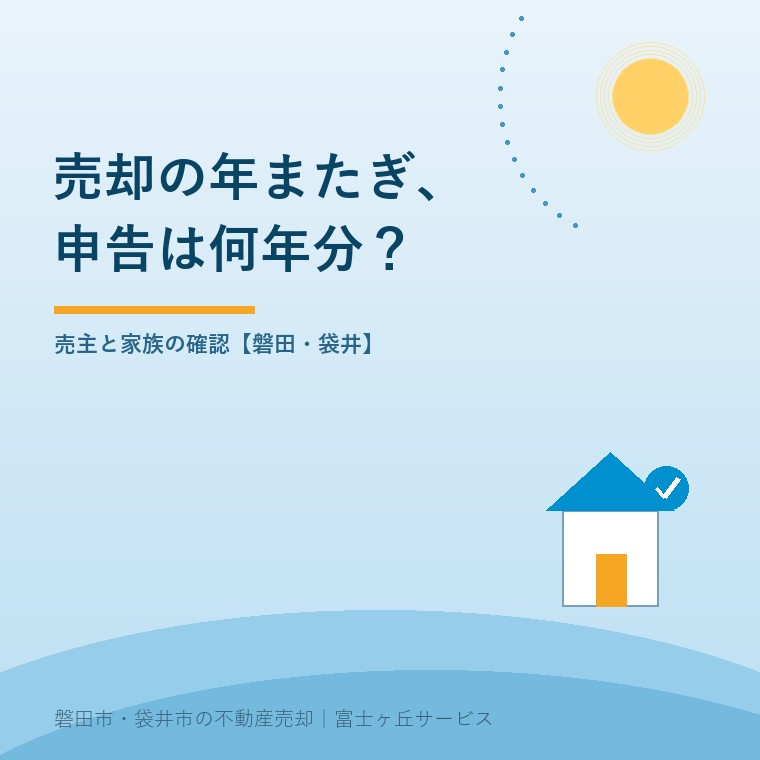
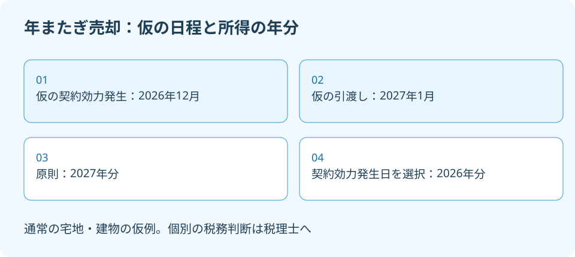

不動産売却の年またぎ、申告は2026年分？
2026年9月28日｜カテゴリ：コスト・税・制度

この記事の要点
2026年に契約して2027年に引き渡したら、何年分で申告する？
譲渡所得の収入時期は原則として引渡日です。契約の効力発生日による申告が認められる扱いもあるため、日付と契約内容を税理士へ示して判断します。磐田市・袋井市では、介護施設の運営から不動産事業を始めた富士ヶ丘サービスのような地域密着の会社で、決済予定の整理から相談できます。
大石浩之（磐田市／不動産業）です。秋に売却交渉を始めると、契約は2026年12月、残代金の決済と引渡しは2027年1月、という日程案も考えられます。このとき「年内に契約したから2026年分」と決めてしまうと、税理士へ渡す情報が足りません。
売主がそろえるのは、契約書の日付だけではありません。契約の効力が生じる日、残代金の決済日、登記書類の交付日、実際の引渡しの内容を並べます。2026年9月28日に国税庁の所得税基本通達36－12を確認しました。新制度の紹介ではなく、年末前の日程を考えるための整理です。
原則は引渡日、契約の効力発生日も選択肢
不動産売却による譲渡所得の収入時期は、原則として資産の引渡日です。国税庁の所得税基本通達36－12は、納税者が選択し、譲渡契約の効力発生日で総収入金額に算入して申告した場合も認める、としています。単に契約年だけで決める説明ではありません。
例えば、通常の宅地・建物で契約の効力発生日が2026年12月、引渡日が2027年1月という仮のケースなら、原則では2027年分です。契約の効力発生日による申告を選ぶ扱いなら2026年分となります。どちらで申告するかは、実際の契約書と取引の事実を示して税理士に確認します。
| 仮の日程 | 収入時期の考え方 | 所得の年分 |
|---|---|---|
| 効力発生2026年12月・引渡し2027年1月 | 原則の引渡日による | 2027年分 |
| 同じ日程 | 契約の効力発生日による申告を選択 | 2026年分 |
私は、日付の扱いが明文化されていることは、売主の予定を整理する助けになると考えます。契約と引渡しが別の年でも、曖昧なまま申告期を迎える必要はありません。仲介会社が日程の事実をそろえ、税理士が税務上の扱いを確認する役割分担ができます。
その上で私が注文したいのは、「好きな年を自由に選べる」という雑な説明です。選択の根拠になるのは契約の効力発生日であって、都合のよい年を後から作る話ではありません。税額や特例への影響も、収入時期の規定だけでは決まりません。個別の税務判断は専門家に確認を。

年分と申告する年を分けて書く
所得税の「年分」とは、所得を計算する対象の年です。国税庁「No.2020 確定申告」は、毎年1月1日から12月31日までの所得を計算すると説明しています。2026年分の申告は通常2027年に、2027年分の申告は通常2028年に行います。
「来年に申告する予定」という言い方だけでは、何年分の売却所得かが抜けます。家族のメモには「2026年分／申告する年は2027年」のように、二つを並べて書きます。確定した扱いと、税理士へ確認中の案も分けてください。予定を決定事項として家族へ伝えないためです。
契約時に手付金を受け取り、残代金を翌年に受け取る場合も、手付金の入金年だけで結論を出しません。入金が二つの年に分かれたという事実と、譲渡所得の収入時期をどう扱うかは別の確認です。通帳の記録と契約書の代金条項を、同じ相談資料に入れます。
申告する年が分かっても、税額や申告の要否まで自動で決まるわけではありません。取得費や譲渡費用、適用を考える特例の条件などは別に検討します。本記事では申告年の整理に絞ります。2027年の不動産売却の税率を整理した記事とも、確認する問いを分けて読んでください。
鍵の日だけで引渡日を決めない
税務上の引渡日は、鍵を渡した日だけで判断するとは限りません。所得税基本通達36－12の注1は、所有権移転登記に必要な書類の交付など、資産の支配が移転した事実に基づいて判定すると説明しています。原則として、代金決済完了日より後にはならない点にも触れています。
ここは、家族の予定表だけを見ていると意外に感じる部分です。「掃除が残っているから鍵は1月に渡す」と決めても、12月に残代金の決済や登記書類の交付を済ませる案なら、鍵の日をそのまま翌年分の根拠にはできません。実際に誰が何を管理できる状態になったかまで確認します。
私は、年をまたぐ案では「決済」「書類」「鍵」を同じ行にまとめず、三つの行に分けることを勧めます。不動産会社の都合で一括して「引渡し予定」と書くと、税理士から追加質問が出たとき、何をいつ渡すのかを調べ直すことになります。
日程をずらす目的も伝えます。残置物の搬出が間に合わないのか、買主の融資日程なのか、売主の転居なのか。理由によって契約の確認箇所が変わります。決済当日のお金と手続きを確認し、鍵の受渡しだけを別の約束にするなら、その条件を仲介会社と整理します。
税理士へ渡す日付と資料をそろえる
年またぎの申告を相談するときは、契約の効力発生日、決済完了日、登記書類の交付日、引渡しの事実を示す資料をそろえます。国税庁の規定に当てはめるための材料であり、仲介会社が税務判断を代わりに確定する書類ではありません。
| 日付・条件 | 相談時に見せる資料 |
|---|---|
| 契約締結と効力発生 | 契約書案、条件や特約の記載 |
| 代金の決済 | 手付金・残代金の予定表、完了後の入金記録 |
| 登記書類の交付 | 司法書士と確認した受渡し予定・記録 |
| 物件の引渡し | 鍵、荷物、使用・管理の条件、引渡しの記録 |
不動産屋が日程を先に固めて、税金は後で聞いてくださいでは順番が逆です。私はこう考えます。買主と合意した後で日程を変えるには、相手の了承や資金の調整も要ります。税理士に結論だけ尋ねるより、契約前の二つの日程案を渡す方が、売主が選べる余地を残せます。
ただ、私もどちらの年分が有利かを、この日程表だけでは決められません。売主の取得時期やほかの所得、検討する特例によって答えが変わるからです。所有期間5年を1月1日で判定する話も、今回の「何年分か」とは別の論点です。数字を一つ見て判断を連結しません。
実家の敷地と一緒に農地を売る相談なら、そのことも最初に伝えます。通達36－12には、一定の農地等の譲渡について契約締結日を扱う別の記載があります。通常の宅地・建物向けの例を、そのまま農地へ広げません。地目や取引内容を示して税理士へ確認してください。
磐田・袋井の年末売却は日程案から相談する
磐田市・袋井市の実家を2026年秋から売り出すなら、年内決済の案と2027年引渡しの案を、契約条件と一緒に整理します。地域によって所得税の年分が変わる話ではありません。地元の家の片付けや家族の移動予定を、税務確認ができる具体的な日付にする作業です。
施設に入った親が売主なら、家族が動ける日だけで日程を決めません。本人の意思確認や必要書類の準備も含めて、仲介会社と担当司法書士に予定を伝えます。税金のために無理に年内へ詰め込むより、何が間に合い、何が未確認かを明確にする方が、契約後の変更を減らせます。
今日できる確認は、契約書案の「代金」「所有権移転」「引渡し」「特約」の欄を見せてもらうことです。まだ買主が決まっていないなら、想定する日程を一枚に書くところからで構いません。税理士へ聞く質問も「何年ですか」ではなく、「この条件なら何年分として扱うか」にします。
富士ヶ丘サービスでは、介護と不動産を一体で相談し、磐田・袋井の実家の資料と日程を整理します。家族が困らない売却に必要なのは、年内に終えること自体ではありません。私は、売主が税務の確認を受けてから日程を選べるように案内します。税務・登記の個別判断は専門家に確認を。
- 契約年だけで申告の年分を決めない。
- 決済、登記書類、鍵の日を分けて記録する。
- 日程を合意する前に、契約書案を税理士へ示す。
よくある質問
不動産売却の申告は、契約と引渡しの事実をそろえて確認します。
- 年内に手付金を受け取れば、必ず2026年分ですか？
- 手付金を受け取った年だけで、譲渡所得を何年分にするかは決まりません。所得税基本通達36－12は原則を引渡日とし、納税者の選択で契約の効力発生日による申告も認めています。契約書、手付金と残代金の入金記録、引渡し条件を税理士に提示してください。個別の申告年や申告の要否は専門家に確認を。
- 鍵を2027年に渡せば、引渡日も必ず2027年ですか？
- 鍵の受渡し日だけでは断定できません。国税庁は、登記に必要な書類の交付など、資産の支配が移った事実に基づいて判定すると説明しています。原則として代金決済完了日より後にはならない点にも注意が必要です。残代金、登記書類、鍵の各日付がずれるなら、契約前に予定を税理士へ伝えて確認してください。
- 2027年分とは、2027年に申告する意味ですか？
- 「2027年分」は、2027年1月1日から12月31日までの所得についての区分です。通常、その確定申告は翌2028年に行います。2026年分なら通常は2027年の申告です。資料の見出しを「所得の年分」と「申告する年」に分けると混同を防げます。実際の申告期間や必要な申告は国税庁と税理士に確認してください。

この記事を書いた人：大石浩之（磐田市／不動産業・宅地建物取引士）
富士ヶ丘サービス株式会社。介護施設の運営から不動産事業を始め、磐田市・袋井市・森町で、介護と相続、実家の売却を一体で相談できる窓口を設けています。家族が困らない売却のため、資料と現地の条件を一件ずつ整理します。著者プロフィール
本記事は2026年9月28日時点の公開情報と筆者の意見です。制度・数値・手続きは変更されることがあります。個別の税務・登記・相続・代理の判断は、税理士・司法書士・弁護士などの専門家に確認を。